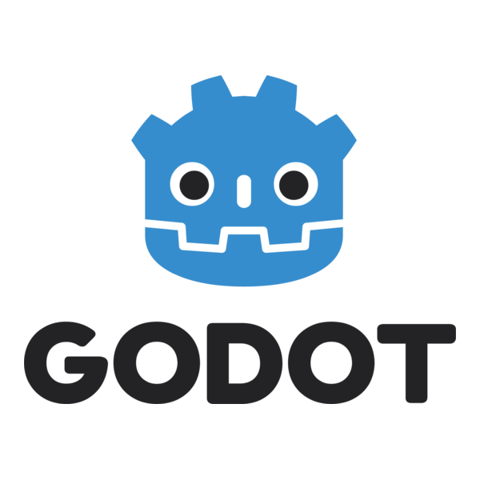

I am a software engineer based in Jakarta, Indonesia with substantial experience in reverse engineering. I have worked on several hobbyist projects related to modifying arcade games, which can be seen on my GitHub and a few communities surrounding the games.
My most notable work is in the Wangan Midnight Emulation community, where I have contributed to several open source projects and spun up a few projects on my own. Furthermore, I have created tools to work with both Namco and Konami arcade games, and I have worked on physical arcade cabinets.

Projects
OpenParrot WMMT5DX+ Support
Added Maximum Tune 5DX+ Support to the TeknoParrot Arcade Emulator including progress saving

PTMN WMMT6RR Network
A volunteer-run reimplementation of the WMMT6RR server for both emulators and aftermarket arcade cabinets with quality-of-life and security features including:
- HWID Locking
- Serial Number Authentication
- Arcade Billing Reimplementation
- Custom Playlists
- Custom Resolutions
- Custom Shop Names
- Region Changing

Depthrush Dancerush Kinect Driver
A plugin that allows Dancerush Stardom to be played with an Xbox 360 Kinect
SkibiSync IIDX Sync Tool
A reverse engineering effort for older versions of Beatmania IIDX to allow music syncing on non-CRT displays
Amazone EWS Custom Software
Assisting in repairing end-of-life arcade cabinets with custom software

Skills
IDA Pro
Proficient in using the IDA binary reverse-engineering tool

C++
Able to program in C++ including low-level features such as pointers

Godot Game Engine
Able to use the Godot Game Engine to make both 2D and 3D video games

Web Development
Able to create websites with HTML, CSS, and JavaScript. Additionally, I also know Bootstrap.